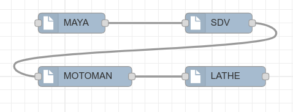
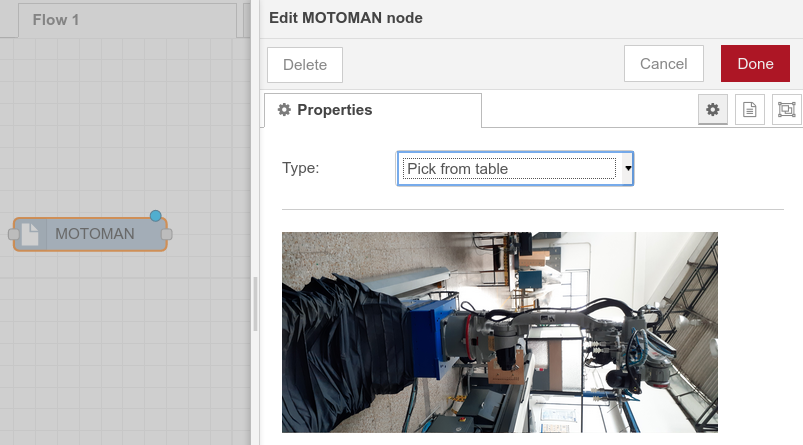

Node-Red¶
La interfaz web utiliza una herramienta creada por IBM (Node-Red) por medio de la cual es posible diseñar procesos que involucran las máquinas del laboratorio. En la siguiente imagen se muestran los cuatro nodos que representan a cada uno de los equipos integrados hasta ahora.
Así mismo, al hacer doble clic en alguno de ellos (en este caso el motoman) es posible escoger entre alguna de las primitivas para que sea esta la tarea que él deba realizar:
Adicionalmente, se debe tener en cuenta que la referencia en caracteres que se evalúa en los condicionales debe coincidir con los valores que se envían firebase_initializer.py. A continuación se muestra un fragmento del código motoman.html.
1 2 3 4 5 6 7 8 9 10 11 | <script type="text/x-red" data-template-name="MOTOMAN">
<div class="form-row">
<label for="node-input-typeProp"><i class="icon-tag"></i> Type:</label>
<select id="node-input-typeProp">
<option value="pick_sdv">Pick from SDV</option>
<option value="place_sdv">Place to SDV</option>
</select>
</div>
<hr>
<img src="/img/motoman_home.jpg" alt="Motoman machine" width="400" height="160">
</script>
|
Una vez lanzado node-red:
node-red
Se puede visitar la página 192.168.1.70:1880 para realizar el diseño de los procesos. Cuando se valide la funcionalidad (por parte de un operario) se procede a desplegar (Deploy) la misma.
Se deben haber ejecutado los pasos de conexión mencionados en Plataforma robótica - Motoman y en Torno Suizo.
Luego de tener autorización por parte de LabFabEx, el código fuente puede ser descargado utilizando el siguiente comando:
git clone -b develop https://gitlab.com/LabFabEx/node-red-pria.git
git submodule init
git submodule update
cd src/firebase-coms
git checkout basic_dt
cd ../..
cd src/task_generator
git checkout basic_dt
cd ../..
yarn start
Publicación de proceso en RTDB (Firebase)¶
Para publicar el flujo de proceso guardado cualquiera de las pestañas de Node-Red se debe hacer clic al botón Deploy. El archivo que publica la información en la base de datos remota es el servidor del laboratorio, los siguientes son los comandos que se deben ejecutar para conectarse y para publicar el flujo:
ssh server@192.168.1.70
cd Documents/node-red-pria
# Formato
# node dist/utils/linker.js X
# Ejemplo para publicar el flujo de la pestaña 2 (Flow 2)
node dist/utils/linker.js 2
Si el procedimiento anterior se realiza con éxito se debe ver en pantalla el ID del proceso publicado.